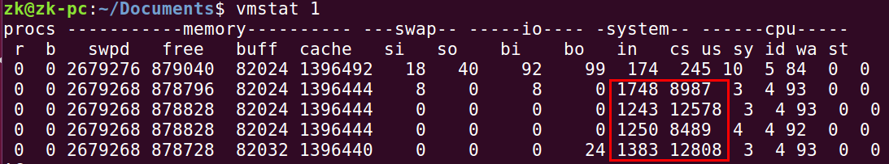
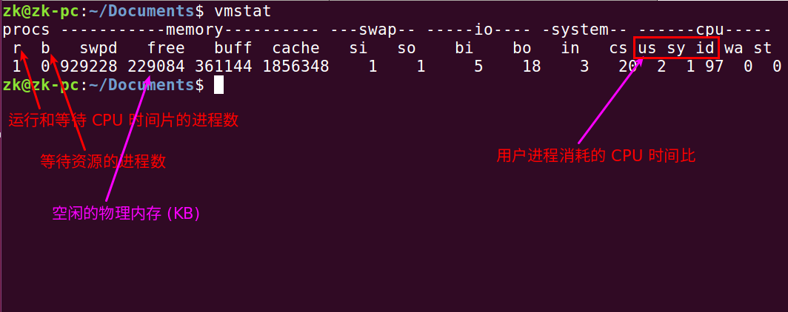
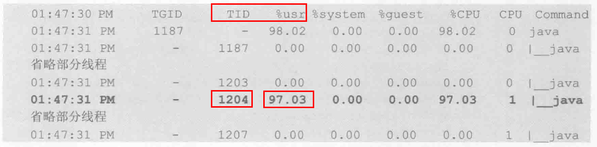
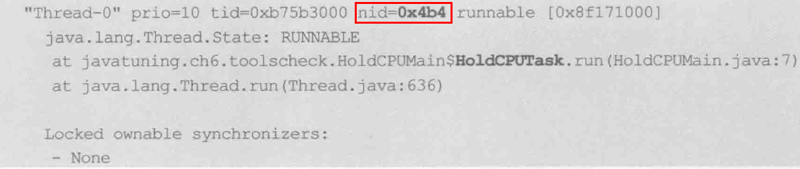
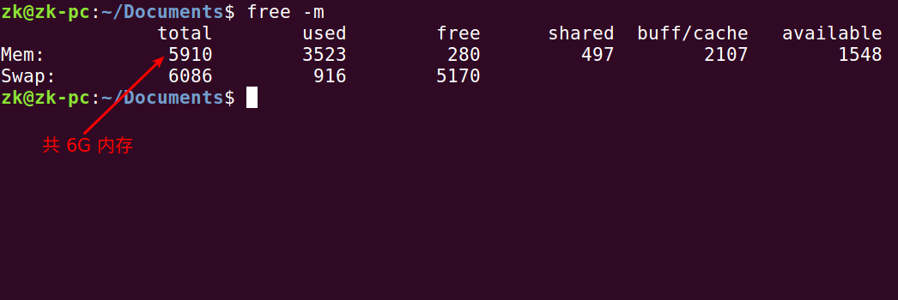
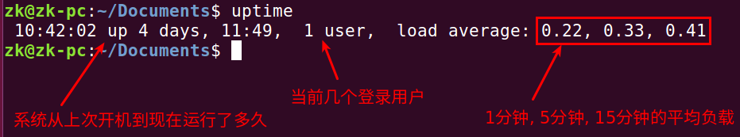

可以看到用红色框住的部分，有着很高的 cs (上下文切换) 值和 us(用户 CPU 时间) 值，表明系统上下文切换频繁，用户 CPU 占用率高:

一般这样的代码容易产生上下文切换比较频繁的情况:
1 2 3 4 5 6 7 8 9
while (true) { synchronized (lock[i]) { if (i % 2 == 0) { lock[i].wait(r.nextInt(10)); } else { lock[i].notifyAll(); } } }
每 1 秒采样一次，共计 3 次:
1
vmstat 1 3

查看是否有大量磁盘交换，对于没有磁盘交换的服务器，这些值应该为 0:
iostat - 监控 I/O 使用 - 判断 I/O 是否过载
1
iostat 1 2
只输出磁盘使用情况:
1
iostat -d 1 2
pidstat - 监视进程和线程
什么叫做占用 CPU 的线程:
1 2 3
while(true) { double a = Math.random() * Math.random(); }
什么叫做空闲线程:
1 2 3
while(true) { Thread.sleep(1000); }
使用 jps 找到 Java 程序的 PID 1187，然后执行下面命令查看 CPU 使用情况:
1
pidstat -p 1187 -u 1 3
-p: 指定进程 ID
-u: 对 CPU 使用率的监控
监控线程信息:
1
pidstat -p 1187 1 3 -u -t
-t: 监控线程信息，输出的时候会多一个 TID 参数

使用 jstack 可以导出指定 Java 应用程序的所有线程:
1
jstack -l 1187 > /tmp/t.txt

如图所示，它的 nid (native ID) 为 0x4b4，转为 10 进制后，正好是 1024
有大量读写的线程:
1 2 3 4 5 6 7
FileOutputStream fos = new FileOutputStream(new File("temp")); for (int i=0; i<10000; i++) { fos.write(i); } fos.close(); FileInputStream fis = new FileInputStream(new File("temp")); while (fis.read() != -1) ;
使用如下命令监控磁盘 I/O 情况:
1
pidstat -p 22796 -d -t 1 3
-d: 监控磁盘 I/O
进行内存监控
1
pidstat -r -p 27233 1 5
free - Display amount of free and used 内存 in the system
1 2
# 以 M 为单位查看 free -mt
-t:
–total: Display a line showing the column totals.
-h: human readable

sar - 收集, 报告以及保存系统活动信息
首次使用，需要编辑文件:
1
/etc/default/sysstat
将里面的内容改为:
1 2 3 4 5 6 7 8 9
# # Default settings for /etc/init.d/sysstat, /etc/cron.d/sysstat # and /etc/cron.daily/sysstat files #
# Should sadc collect system activity informations? Valid values # are "true" and "false". Please do not put other values, they # will be overwritten by debconf! ENABLED="true"
然后重新启动 systat:
1
sudo service sysstat restart
才能直接使用 sar
uptime - Tell how long the system has been running

mpstat - Report processors related statistics
netstat
1
netstat -an
-a:
–all: 显示所有的监听和未监听的 Sockets
-n:
–numeric: 显示数字的地址，而不是显示 symbolic 地址，端口或用户名
top - 显示系统整体资源使用情况
1 2
# 每隔 3 秒刷新一次 top -d 3
lsof - list open files
1
lsof -p $PID
-p $PID: excludes or selects the listing of files for the processes whose optional process IDentification (PID) numbers are in the comma-separated set s.